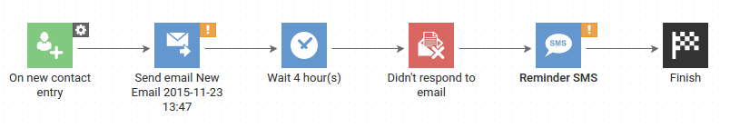

Beyond modules
Rafael "DeVill" Ordog
 @devillsroom
@devillsroom
What is a microservice?
Independent processes
Language agnostic APIs
Independently deployable
Independently scalable
Graceful failures
Yadi yadi yada...
Monoliths
Microservices
WAR STORIES
War story #1
"It's just like a function..."

Players receive each event one-by-one
Observer pattern
The first sit'n'go took over 20 minutes
Fallacies of distributed computing
Think in terms of documents
War story #2
"It's just like an object..."
Players are independent objects
Each has its own memory
Too much boilerplate
Impossible to debug
Can't scale out
Or DB is necessary
Stateless services
Send current state
War story #3
"Works on my machine..."
Automation Center
Let's just call that other service
Wired bugs
Could not reproduce
Falacies of distributed computing
Design for failure
Can you retry safely?
Saga pattern
Forward recovery
Idempotence
Learning to fall
War story #4
"It's just one more dependency..."
Nodes in Automation Center
Integrated one-by-one
Most of the code was service adapters
Inverting dependencies
API node
Thank you!